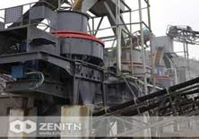

Artificial Sand Making Machine
VSI series efficient Sand Making Machine German experts working conditions combined with China's latest design achievements, is currently the only manufacturer of high performance crushing equipment with the world advanced level. It is a unique rotor design, wear-resistant materials technology, broken speed optimization and the perfect combination of hydraulic design. Sand Professional crushing technology and machinery manufacturing the perfect combination of a model is to fully reflect the new technologies, new processes.
Sand making machine production line
Sand making machine production line aggregate volume about 70% to 80% by volume of the concrete, and aggregate coarse sand production line and about 60% to 70% of the total sand production line aggregate volume. For ordinary concrete, the water-cement ratio is an important factor in controlling the mechanical properties of concrete (including compressive strength) is. Aggregate sand production line itself has little effect on the strength properties of concrete, sand making machine production line has long been considered only aggregate are inert filler, and its role in the concrete is limited to two areas: to aggregate sand production line the concrete has a higher volume than the cement stability and better durability; the sand production line aggregate material prices cheaper than cement, aggregate use sand production line of grout filled concrete form, so that the same amount of cement The concrete can occupy a larger volume and make it cheap building materials.
Sand making machine work characteristics
simple and reasonable structure, low running costs. The use of stone at stone principle, wear little; crushing rate, energy saving; with crushing, coarse grinding function; by the material moisture content is small, the moisture content up to about 8%; more work noise below 75 db (db level), dust less pollution; suitable for crushing medium-hard, extra-hard materials; product into cubes, large bulk density, iron contamination is minimal.
Recycled coarse sand production line the vast majority of the aggregate particles attached to the surface part of secondary particles used mortar, a small part of the status quo completely out of mortar particles and waste, as well as a small part of the waste mortar particles. However, attached to the surface of the secondary waste mortar sand making machine production line itself aggregate particles varied widely, old mortar attached to the surface some particles large, old mortar attached to the surface some small particles; mortar amount of waste particles adhered to the surface properties of concrete have a significant impact. Practice has proved that only the sand production line seen as a concrete aggregate production cost of the filling material is unscientific, because the mechanism sand production line not only constitute the skeleton of concrete aggregate, and to a large extent determines the concrete mix performance material, the mechanical properties of hardened concrete and concrete structures durability. Thus, aggregate sand production line also has a very important role in the concrete.
Products Center
- Crushing Equipment
- HJ Series Jaw Crusher
- PE Series Jaw Crusher
- PEW Series Jaw Crusher
- HPT Cone Crusher
- HST Series Single Cylinder Hydraulic Cone Crusher
- HP Series Cone Crusher (Hydraulic)
- S Series Cone Crusher
- PFW Series Impact Crusher (hydraulic)
- PF Series Impact Crusher
- B Series Deep Rotor Vertical Shaft Impact Crusher
- B Series VSI Sand Making Machine
- Grinding Equipment
- Feeding & Conveying
- Screening & Washing
- Mobile Crushing Plant
- Track Mounted Mobile Crushing Plant
- Complete Crushing Plant
- Mining Equipment
- FL Spiral Classifier
- FX Series Hydro-cyclone
- BF Series Flotation Machine
- CT Series Wet Magnetic Separator
- SF Series Flotation Cell
- XCF/KYF Series Flotation Machine
- GX High Efficiency Thickener
- NZ Center Drive Thickener
- NG Peripheral Traction Thickener
- ZGT Series High Gradient Magnetic Separator
- XAMY Series Filter
- CTL Series Dry Magnetic Separator